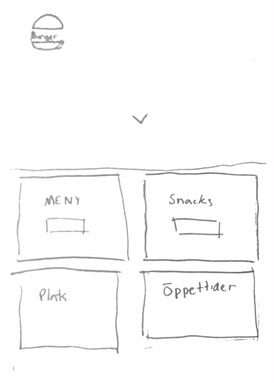
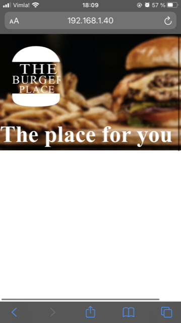
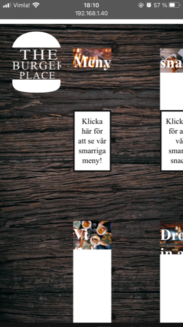

Detta projektet kommer för mig bli lite av en utmaning då vi inte riktigt jobbat med att fylla boxarna i en grid med något och samtidigt få det snyggt. Det som kommer att vara lite lättare för mig är att faktiskt göra en grid och att boxarna ligger på rätt ställe.

1. Idébeskrivning
Jag vill designa en hemsida för en hamburgerestaurang, och då inte en snabbmatsrestaurang utan en lite finare men ändå vardaglig en. Min målgrupp är alltså vanligt folk("medelklass") som vill käka god mat för en billigare peng. JAg vill att min sida ska vara stilren och använda mörkare/ dovare färger.
2. Planering
2.1 Handskiss
2.2 Schema
Vecka
På lektionen
Utanför lektionen
47
Hitta bilder, göra planering
Börja koda sida.1
48
Fort. kodning sida.1
kodning, klar sida.1
49
koda sida.2
Klar sida.2
50
koda sida.3
klar sida.3 och hela hemsidan
3. Dokumentation
Lektion 1
Jag har letat upp lite barkgrunsbilder som passar och börjat koda. Har oxkså skrivit på dokumentationen.
Lektion 2
Jag har fortsatt att koda på sida ett och fått mer struktur över den. Har upptäckt att min hemsida kankse inte fungerar lika bra på mobil vilket är något jag bör fixa.
Lektion 3
Idag har jag lagt till en footer och fixat lite med boxarna. Har också lagt till en a tagg med en hyperlink till längre ner på sidan.
Lektion 4
Idag har jag designat en logga och tänkt ut mer hur min färdiga förstasida ska vara.
Lektion 5
Idag har jag tragglat med de fyra boxarna längre ner på sida 1. Har också börjat på sida två som ska vara menyn.
Lektion 6
Idag har jag gjort mycket! Både sida 1 och 2 är nästan klara, de behöver bara lite finlir med en footer osv. Jag har också bytt bakgrundsbild på sida 1 och lagt till lite fler bilder så det inte blir lika svartvitt.
Lektion 7
Idag har jag gjort min tredje delsida och är nästan klar med hela sidan. Behöver bara anpassa till mobil osv.
Lektion 8
Idag har jag gjort så att min footer sitter på alla tre sidor, har också försökt fixa ett problem med att en knapp är större än vad den ser ut att vara.
fortsätt på samma sätt
4. Testning
I Chrome fungerar allt som jag vill att det ska fungera. När jag har öppnat det i Safari blir det lite mer konstigt. Boxarna ligger inte riktigt där jag vill och fonten jag valt byter till Times new roman eller liknande. När jag öppnar sidan på mobilen blir allt hejsan svejsan (bild nedan). Jag hade behövt göra en massa ändringar om hemsidan skulle kunna användas på något annat ställe än chrome. Valideringen i lighthouse gick jättebra. Jag fick över 90 på alla 4 kategorier på desktop. För mobil gick valideringen inte lika bra, då låg Preformance nere på 52. Contrastchecker.com var ganska övergripande enligt mig och tittar inte på alla aspekter. Jag kan hålla med om att jag på vissa ställen inte har jättebra kontrast mellan bakgrund och förgrund men kan tycka det är snyggt ibland så i mitt fall är det ett designval. Texten står dock alltid ut tillräckligt för att allt ska vara grönt på contrastcheckern.

5. Utvärdering
Rent generellt gick arbetet bra. Det kändes som att det var tillräkligt mycket utmaningar för att det inte skulle bli tråkigt eller för svårt. Det som jag tyckte var svårast var att faktiskt få det snyggt. Jag tycker det är ganska enkelt att göra boxer i ett gridsystem men när man börjar fylla boxarna blir det snabbt väldigt invecklat och avancerat. Det var vissa saker som jag inte riktigt förstod hur jag skulle göra som t.ex att sätta loggan längst ner i footern på alla delsidor. Det fungerade på förstasiden men inte på de andra. Jag vet ty hur man skulle kunna fixa det men det betyder nog att jag måste ändra om hela grid-systemet på de delsidor vilket i sin tur betyder att jag måste göra om hela arbetet. När jag stötte på något som jag ville göra med hemsidan och hade bristande kunskaper inom sökte jag upp det. Det fungerade väldigt bra och har lyckts göra många snygga lösningar med hjälp av det. Det ända jag kan säga som jag inte försår med den kon jag har skrivit är "webkit" som förekommer i vissa css-rader. Dock är det alltid något ord kopplat till detta så att jag förstår vad det gör ändå. Det som jag hade ändrat eller förbättrat med hemsidan är att den ska se snygg ut på alla skärmar och webbläsare.